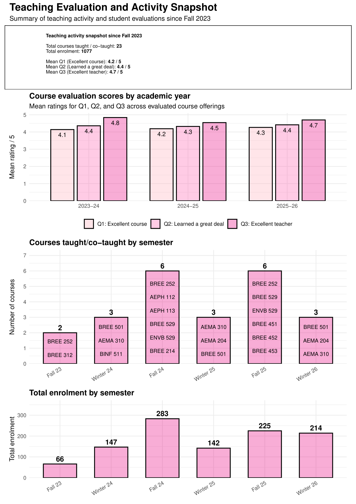

Clarity and structure
I organize classes around clear learning outcomes, step-by-step explanation, applied examples, and repeated opportunities to practice.
Teaching
My teaching emphasizes clarity, applied learning, student confidence, and the responsible use of quantitative, computational, and environmental reasoning in engineering and environmental systems.
Teaching snapshot
The snapshot below summarizes course activity, enrolment, and evaluation trends from the teaching dossier.

Teaching philosophy
I organize classes around clear learning outcomes, step-by-step explanation, applied examples, and repeated opportunities to practice.
I use modelling exercises, data-analysis tasks, coding examples, demonstrations, and discussion-based problem solving to help students connect theory to real-world engineering and environmental challenges.
I strive to create classrooms where students from different backgrounds feel comfortable asking questions, building skills, and developing confidence in quantitative and computational material.
Course portfolio
Teaching innovation
Designed AEMA 204 as an introductory data-analysis course using open-source tools and practical exercises to support accessible, applied learning.
Introduced live-script-based teaching in BREE 252 to integrate code, output, explanation, and problem-solving logic.
Implemented structured peer-feedback workflows for seminar courses and supported graduate attribute indicator tracking and TA workshops.
Invited talks and guest lectures
The list below is deduplicated across invited talks and guest lectures to avoid repeating entries that appear in more than one part of the dossier.